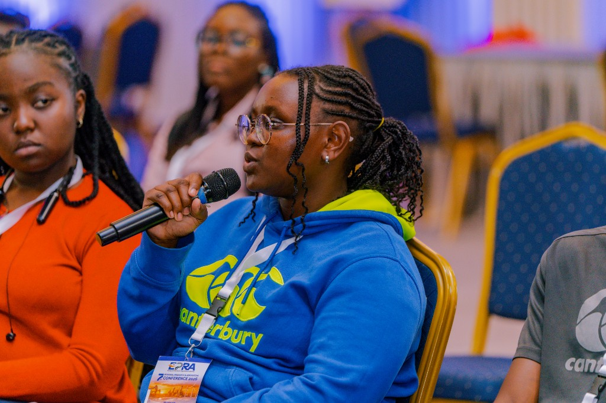

01
Find who’s left out
Start with the people the formal system can’t see.
Interview the overlooked users first. Name the barriers — literacy, connectivity, trust, documentation — before writing a line of product strategy.
MsWanjiku · Blessings
I’m Blessings — also known as MsWanjiku — a Nairobi systems builder. I design and ship high-impact digital systems that merge strategy, community, and technology for people the formal world overlooks.

Who is left out of the system — and how do we redraw it?
Start with the people the formal system can’t see.
Interview the overlooked users first. Name the barriers — literacy, connectivity, trust, documentation — before writing a line of product strategy.
Credit graphs, care networks, supply chains — the real unit of analysis.
Systems fail in the links between people. I model who depends on whom, what flows where, and where a small intervention can unlock access.
WhatsApp, USSD, voice, or web — meet people where they already are.
Pick the lowest-friction channel for the real context. Design for intermittent connectivity, shared phones, and interfaces that don’t assume English or broadband.
Hackathon pressure, beta users, explainable outcomes — then scale what works.
Prototype under constraint, put it in front of real users, measure what changed, and only then scale. Proof beats polish.
Product, hackathon team, mentorship, or WoTe — if it redraws access, I'm in.
Start a conversation →